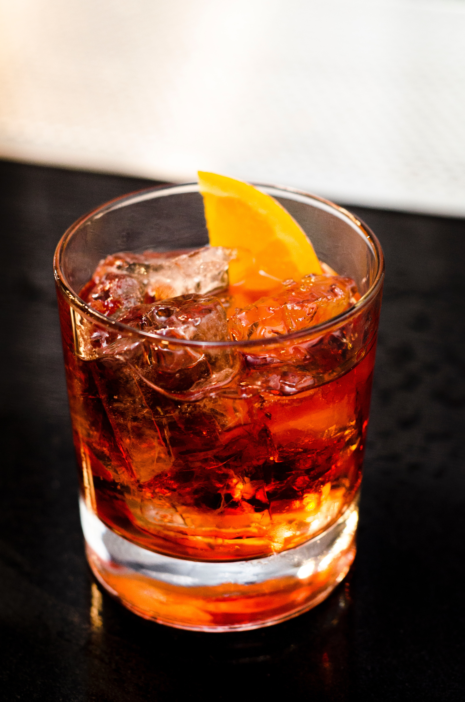

Negroni

A drink only for the classiest of chaps - this drink was created in Italy in the latter half of the 1800s. This drink will surely take your tastebuds on a ride!
Ingredients
- 1 oz. Gin
- 1 oz. Campari
- 1 oz. Sweet Vermouth
- Orange Slice (for Garnish)
- Ice
Barware
- Rocks Glass
- Mixing Glass
- Stirring Spoon
- Hawthorne or Julep Strainer
Steps
- Combine your gin of choice with Campari and Sweet Vermouth in a mixing glass filled with ice.
- Use the stirring spoon to stir the drink until it is well-chilled.
- Strain using your strainer of choice into a rocks glass filled with ice.
- Garnish the drink with an orange slice.
Return to Main